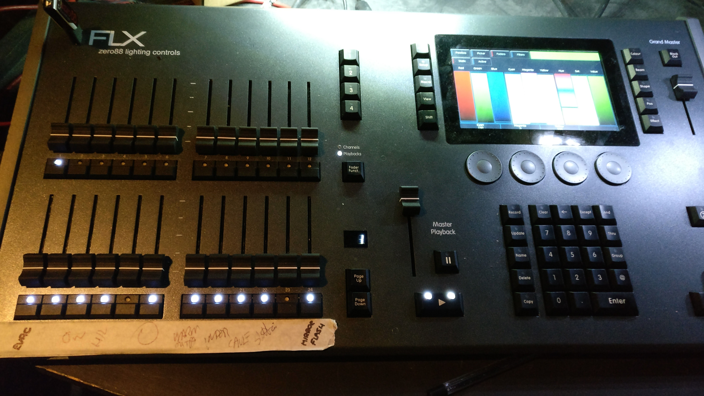
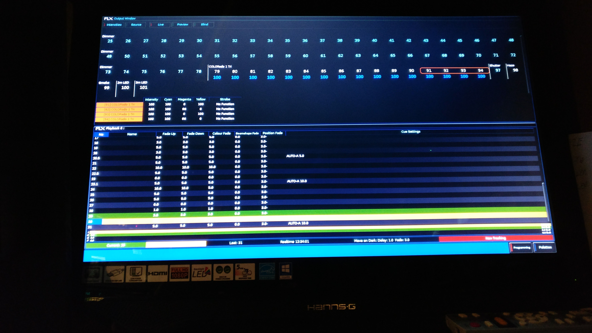
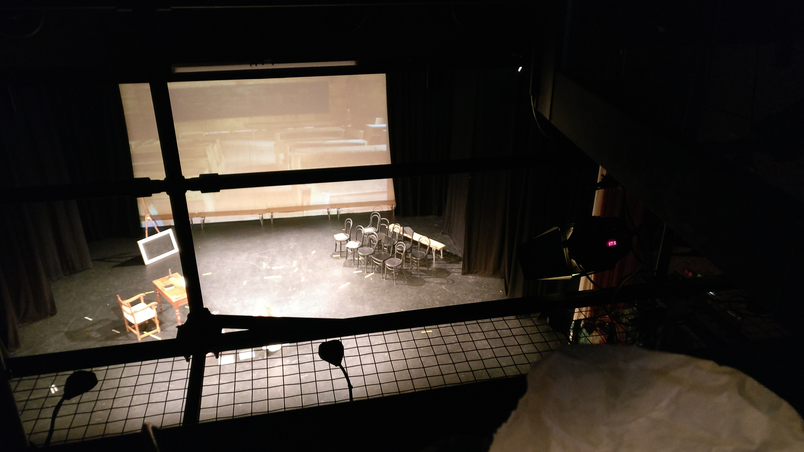

ICT at school
ICT Activity
For one term I ran an evening activity to teach kids how to make 3D games in Unity.
I showed them how to create terrains, make hills, rivers, forests, mountains and grasslands. I showed them how to implement an FPS controller, cars, planes and choppers. I introduced them to different lighting techniques and image effects. I also introduced them so some concepts of programming in C#, e.g variables and strings.
School Play Lighting
I controlled the lighting for St.Michaels Production of Alice in Wonderland, which was done in the school gym. The headmaster was impressed with my work so he invited me to control the lights for the Year 6's production of Dr.Dolittle, which was done at the Jersey Art's Centre, where the equipment is MUCH better. The people at the Art Centre were also impressed with my work and afew months later asked me to stand in for a lighting crew that didn't turn up for a Drama School's Dance Show. Recently I controlled the lights for St.Michaels Production of Tom Sawyer, which was at the Art Centre again. Here are some photos of the lighting booth...
Lighting Board
Lighting Board Monitor
View of the stage from the lighting booth.
School ICT Assembly
I ran an assembly on ICT in front of the entire school where I showcased my app, ParkR, told the pupils how they could get involved in Hackathons. I also gave them an introduction to web design in HTML, where I showed them the "p" and "h" tags.